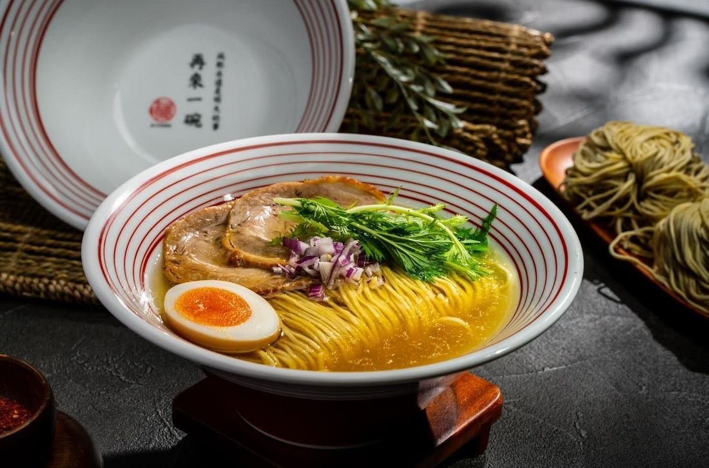
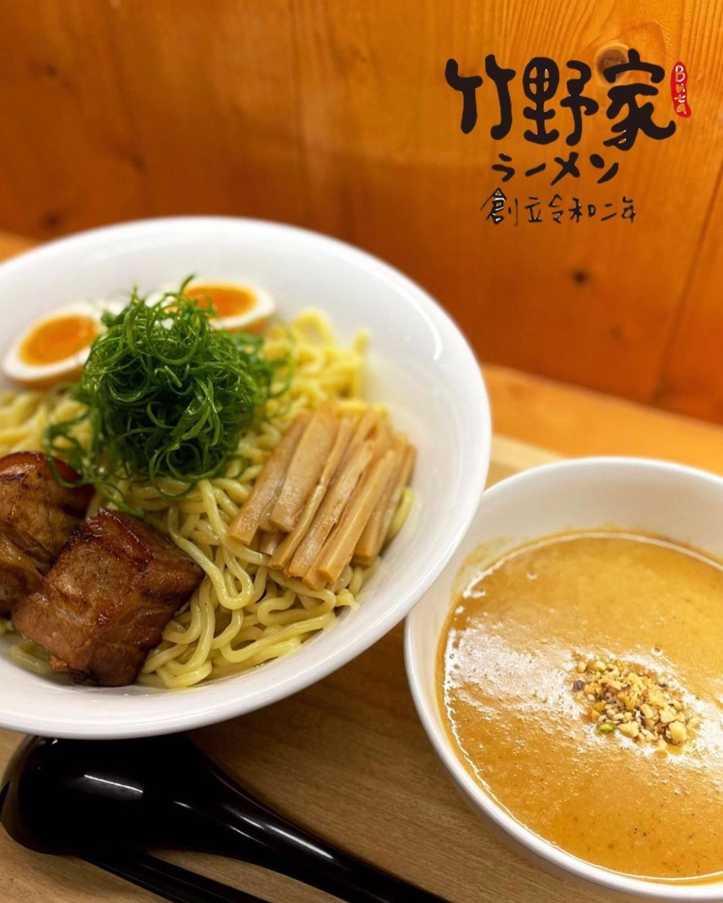
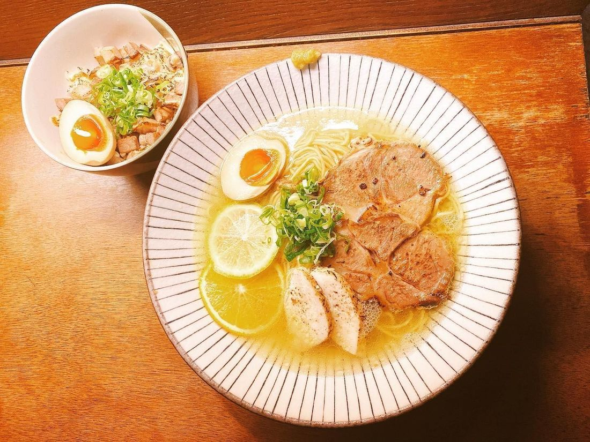

| 豚骨白湯拉麵 | 我很愛他的湯頭！拉麵是Q彈有嚼勁的那種，白湯的豚骨非常香濃，讓你忍不住一口接一下，一下子就吃完了超滿足！而且他的碗底還藏有小驚喜喔！據說有機會可以抽到免費招待一碗，可惜不是我拉～我的是「減肥永遠是明天的事」也是很符合。 |  |
| 究極辣麵番茄拉麵 | 「沾麵」是麵條跟沾湯分開，「沾湯」是熱的、「麵條」是冷的，從第一口到最後一口都會感覺不太一樣，非常神奇的層次口感等你來試試！ |  |
| 燻雞濃湯拉麵 | 這間的拉麵真的吃到會讓你hen驚豔！一碗裡面有大塊大塊的叉燒肉、還有雞叉燒及溏心蛋，最特別的是還有「檸檬片」可以在濃郁湯頭中感受到淡淡的清爽！不會像一般日本拉麵一樣過於重鹹又油膩，又比台式拉麵更為獨特！大推～ |  |